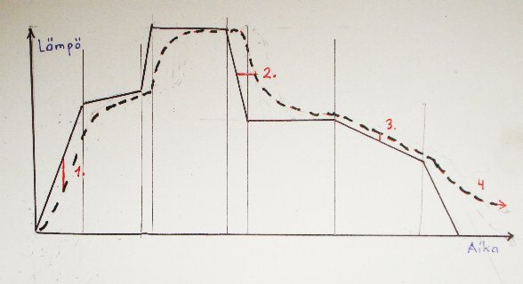

<- 22.11.08
Polton kulku

Polton kulku Kuva ei ole mittakaavassa.
Lasin polttamisessa on eri vaiheita. Musta yhtenäinen viiva kuvaa unnin ohjelmaa,
katkoviiva lasin lämpötilaa. Huomaa miten lasin lämpö muuttuu aina myöhemmin ja juohevammin.
- 1. vaiheessa kun kylmä lasi pannaan uunniin
on lämpöä nostettava niin hitaasti ettei lämpöshokki halkaise lasia.
Tämä jakso ulottuu 540-600 asteeseen asti. Punainen 1. näyttää miten itse lasi
seuraa hitaammin lämmön nousua. Se on tämän verran kylmempää kuin mitä uuni näyttää.
- 2. jakso, kuplanpoisto, on vielä hitaampi. Siinä odotetaan että ilma lasien välissä
laajenee kuumuudesta ja ehtii poistua reunojen ali ennenkuin lasin pehmetessä
reunat tiivistyvät yhteen. Tähän on kaksi tapaa: toiset hauduttavat jossakin
570 kohdalla puoli tuntia, ja toinen tapa on nostaa lämpö
vain kyllin hitaasti n. 620 asti.
- 3. vaiheessa lasi on jo selvästi nestemäistä, vaikka jäykkää.
Siinä lasi ei aseta enää rajoituksia lämmitykselle, vaan se tehdään yleensä
uuniin täydellä teholla suoraan tyälämpötilaan.
Kipsimuotin halkeilemisen välttämiseksi tätäkin jaksoa
joskus hidastetaan tuntuvasti.
- 4. jakso on työlämpötilassa hauduttaminen. Lämpö pidetään yleensä tasaisena. Lämpötila
ja aika vaihtelee tilanteen mukaan. Katso taulukkoa jäljempänä.
- 5. jakso on nopea jäähdytys,
jonka tarkoituksena on pysäyttää lasin muutokset.
Punainen 2. näyttää miten
lasin jäähtyminen vuorostaan tapahtuu uunia hitaammin.
- 6. vaiheessa haudutetaan lämmön tasaamiseksi ennen jännityksenpoistoa.
Kun lasin lämpötila tuee lähelle uunin lämpötilaa tasaantuminen hidastuu.
Siksi aika on esim 6 mm lasille noin tunti.
- 7. vaihe on varsinainen jännityksenpoisto.
Siinä lasi jäähtyy muuntumisalueen läpi juoksevasta kiinteäksi.
Punainen 3. ilmaisee
että tässä vaiheessa lasin ytimen ja pinnan välillä ei saa olla
viittä astetta suurempaa eroa. illoin ytimen pidempään jatkuva kutistuminen
ei aiheuta liikaa jännitystä lasiin.
- 8. vaihe, loppujäähdytys, jossa lasi on taas kiinteää.
Punainen 4. merkkaa
sitä että uuni ja lasi jäähtyvät matalassa lämmössä
huomattavasti hitaammin kun ohjelma.
useimmiten riittää kun uuni saa jäähtyä itsekseen.
Se kestää sietämättömän kauan, mutta ohiutakaan esineitä
ei saa ottaa uunista ennekuin sen voi tehdä paljain käsin.
paksut lasit saavat olla uunissa kunnes uuni on honeenlämpöinen.
Yksinkertainen poltto-ohjelma
Allaolevassa taulukossa on yksinkertainen tapa ohjelmoida poltto eri tarkoituksiin.
Valmisohjelmiin ei pidä luottaa. Ei tähänkään.
Jokainen uuni on erilainen, jokainen haluaa lasilta erilaisen tuloksen.
Nämä ovat lähtöarvoja, josta voi kokeilla itselleen sopivat. Olen käyttänyt niitä
yksikerrospoltossa lasiuunissa ja monikerrospoltossa keramiikkauunissa.
Ohjelma on paljon varovaisempi kuin monikerrospolton yhteydessä esitetty.
merkkien selitys
| -> | lämmön nosto |
| = | haudutus |
| <- | jäähdytys |
Lasi 1-3 kerrosta Bullseye lasia. Yli 9mm paksuudella jäähdytysajat ovat paljon pidempiä.
| |
Pintafuusaus |
Syväfuusaus |
Slumppaus |
selitys |
| vaihe |
lämpöön |
aika |
astetta |
aika |
astetta |
aika |
|
1 -> |
620 |
2:30 |
620 |
2:30 |
620 |
3:00 |
Lämpöshokin alue hitaasti. Jokaisessa uusintapoltossa hitaammin. |
| 2 = |
620 |
0:30 |
620 |
0:30 |
620 |
0:03 |
kuplanpoistohaudutus, ei tarvita slumppauksessa |
| 3 -> |
720-740 |
1:00 |
780-820 |
1.30 |
620-720 |
30 |
Työlämpötila vaihtelee näistä noin. +/- 20 astetta |
| 4 = |
sama |
0:20 |
sama |
0:20 |
sama |
0:20 |
haudutus on helpointa pitää vakiona ja säätää työlämpötilaa. |
| 5 <- |
515 |
skip |
515 |
skip |
515 |
skip |
nopea alkujäähdytys, uunia voi tuulettaa mutta
se ei ole hyväksi ainakaan tiiliuunille |
| 6 = |
515 |
1:00 |
515 |
1:00 |
515 |
1:00 |
lämmön tasaus.
Jos lämpöä sitova muotti tai olet muuten epävarma, pidennä aika kaksinkertaiseksi |
| 7 <- |
370 |
2:00 |
370 |
2:00 |
370 |
2:00 |
jännityksenpoisto. Vähintäin kaksi kertaa haudutuksen aika |
| 8 <- |
50 |
1:30 |
50 |
1:30 |
1:30 |
4.1 |
loppujäähdytys, yleensä uuni on tätä hitaampi. |
kokonaisaika on noin 10-30 t uunin jäähtymiskyvystä riippuen
Skip tarkoittaa niin nopeasti kuin uuni pystyy kuumenemaan tai jäähtymään.
Se asetetaan asettamalla aika nollaksi
End on ohjelman loppu. Asetetaan lämpötila nollaksi (Bentrupin ohjaimessa, joissakin muissa
ajaksi pitää asettaa 9999).
Vaiheen 7 jälkeen voi jäähtymisen nopeuttamiseksi avata uunin tuuletusaukon, tai arkku-uunissa raottaa
kantta hiukan. Vaiheet 7-8 ovat usein "turhia", uuni jäähtyy luonnostaan hitaammin.
Varmistuksena pidän kuitenkin nämä ohjelma-askeleet mukana. Jos uuni jäähtyykin
jostain syystä nopeammin, ohjain korjaa silloin tilanteen.
Ohjelma on suunniteltu yksinkertaiseksi. Van lihavoidulla merkittyjä arvoja tarvitsee
muuttaa eri polttotapojen välillä. Käyttämässäni Bentrup 6/80 ohjaimessa
on vain yksi ohjelmapaikka ja siinä 8 ohjelma-askelta.
Vaativimpien töiden kanssa kokeile pienellä koepalalla.
Paksujen lasien jäähdytys on tuntuvasti pidempi.
Valmistajien sivuilta löytyy ohjeita.
Katso myös paksun lasin jäähdytys
ja paksuuden vaikutus -sivut.
Muita aiheeseen liittyviä sivuja